In this article I am going to tell you what the passing networks are and how to create them, in addition to share with you some R codes that I prepared for that and some examples cases.
If you don’t consider yourself a football analytics nerd and you have not seen yet the slides from the presentations “A look into Soccer Analytics using R” and “Soccer Analytics: A data revolution” I would suggest to check them in order to be familiar with the data types and terminology mentioned here.
What the passing networks are?
The passing networks are one example more of the bunch of new method, metrics and visualizations which have arisen in the last years trying to analyze what happens inside the pitch along a football game.
The passing networks are based on a (generally basic) approach to the graphs theory or analysis, where it is considered the existence of: 1) individual entities (nodes or vertices) which belong to a population or specific group, and 2) the connections between them (edges) in terms an interaction to measure. All this in a spatial and temporal frame.
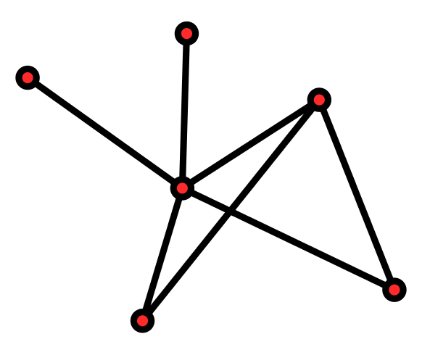
So, if we translate this to football, the nodes are the players of a same team and the edges are the passes between them, considering the pitch as the spatial frame and the duration of one game (generally) the temporal frame.
Here an example of the France passing network in the game with Belgium of the Rusia 2018 World Cup’s semifinal:
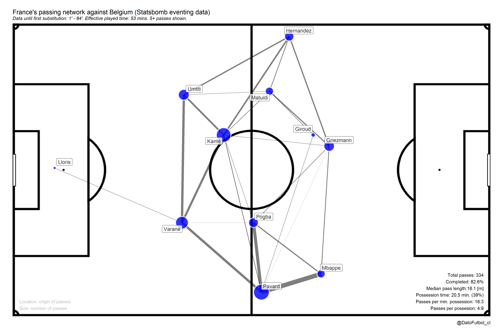
How the passing networks are created?
In the following I mention some key considerations to keep in mind when you create a passing netwrok and then I present details about the R code that I prepared for sharing.
First, of course the main part is to have the necessary data. For that, to have the following evetn data is enough:
- All the acurate passes (completed, not failed) done by a team along the game, with these details: player who do the pass and player who receive the pass (name, jersey number or some ID), [x, y] coordinates of origin and end of passes, and the moment when the passes occur (seconds elapsed).
In general the event data providers bring this data (Statsbomb, Opta, Wyscout, etc.)
Data processing considerations
- To verify if the coordinates were correctly registered and to apply transformations if it is necessary, depending on:
Spatial orientation of the field and the stated coordinates values codification by the data provider. What specfic part of the field is represented by the 0,0 point?
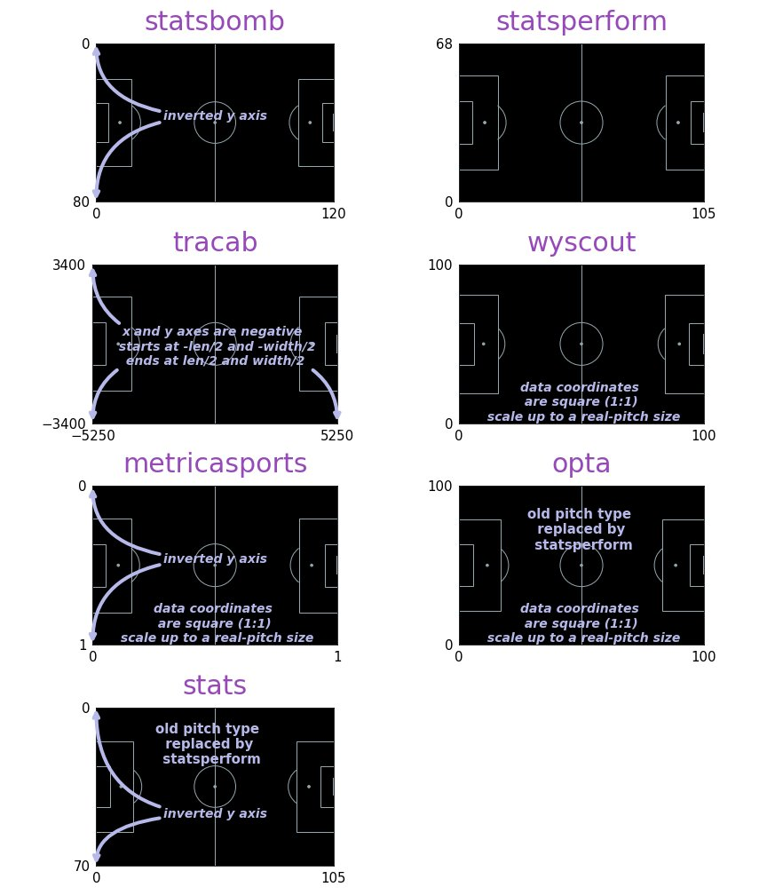
The real dimensions of the field to calculate distance metrics. Generally standard dimensions are used: 105x68 meters.
For the same team along all the game it should be only one attacking direction, even though in football there is a side change in half time.
To limit the temporal window to consider from the game starting to the minimal minute between the first substitution or the first red card, if there is one. It pretends to only consider the time when the same 11 team players who were on the field at the beginning keep on it, owing one of the limitations of this kind of method is just to struggle easly with the metric calculations when players go out.
Additional calculations in case you have the data (see the section about variation types)
Visual considerations
Whwn you define the data visualization mapping these are the most frequent considerations:
Nodes position: Mean or median player location when they do and/or receive a pass
Nodes size: Fixed size or variable size depending on amount of passes, weighted by partners passes
Edges width: Amount of passes between specific two nodes, weighted by the comparison to the amount of passes between another node pairs
Edges direction: Even though some time this detail is ommited, in some cases it is shown with arrows depending on de direction of the passes
Player ID: Label or text (name, jersey numerb, etc.) on the nodes or close to them
Variation types
The variation depends on the goal and the available data. Here a list of common variation:
1.- Having tracking data it is possible to get interesting variations in terms of nodes position in different game situations:
Mean or median players location when their team had the ball possesion (attacking) or when hadn’t it (defending)
Mean or median players location when the ball was inside the own half or inside the opponent half
2.- For some cases of advanced analytics, instead of use the amount of passes, metrics which allow to quantify the value of passes are considered, in terms of their contribution (positive or negative) to the score or keep ball possesion probability, like these models: VAEP (Valuing Actions by Estimating Probabilities), xT (Expected Threat), EPV (Expected Possession value), PV (Possession value), g+ (Goals Added). It is just for this kind of cases when the color using (scales of color and/or transparency) comes relevant to map the nodes and/or the edges.
If you are interested, the VAEP model implementation and the context variation with tracking data are available (Python) in the passing networks Github repository of the Friends of Tracking. Here an example:
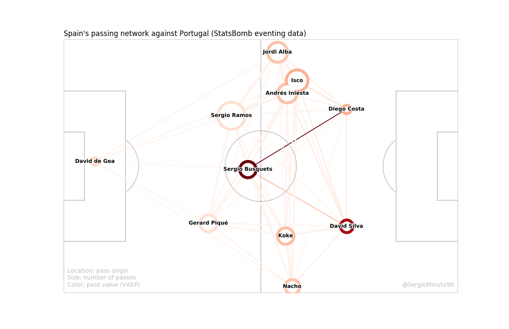
3.- In addition to quantify the passes value some application are alsofocused on to enlight specific pass types, like “long passes”, “backward passes”, “sideways passes”, etc. Take a look into this work for more details: Interactive Passing Networks. Uncovering the hidden potential of passing networks through interactive visualizations.
4.- To include extra information like the amount, accuracy and median length of passes, in addition to ball possession data with metrics like effective possession time and its percent, amount of passes per each possesion or per minute od possession.
5.- To add spatial (2d geometry) visualization and metrics, like the Convex Hull which represent the smallest shape set that contains all connection between nodes (without the goalkeeper). With this it is possible to calculate the distance from the centroid to the both goals, besides the area, amplitude and depth.
6.- To incorporate metrics related to network analysis, like density, centrality, heterogeneity, conectivity, triangulation, etc. Here a project with this focus Football Passing Networks and some interesting publications to go deeper in the topic: [1], [2] & [3].
Create your own passing networks
Now is your turn. I prepared some of R code for you can create your own passing networks using public data, both Statsbomb event data and Metrica Sport tracking data.
Here the link to the Github repository where you will find the codes, necessary files and instructions to dive into.
This work is in some way a mix of these things:
A complement to the soccerPassmap function from the {soccermatics} package by Joe Gallagher
An adaptation to R from the Python code contained in the passing networks Github repository of the Friends of Tracking
An implementation of different ideas from the football analytics community and myself
The functions soccerPassNetEventing y soccerPassNetTracking will allow you to create and customize each one of your graphs, applying the variations that you prefer. The input parameters to set are the following.
Arguments for both functions (event & tracking):
Boolean feature to set edges with or without directions (arrows), so it can be a directed or not directed passing network [pass_dir]
Node position only depending on origin pass location (“origin”) or considering both origin and end locations (“both”) [node_pos]
Numeric value to set the minimal amount of edges passes to show [minPass]
Boolean feature to set if to include or not the visualization ans stats related to the Convex Hull [convex]
Boolean feature to set if to include or not the ball possession stats [poss]
Boolean feature to set if to flip or not the attacking direction [Flipx]
Boolean feature to set if to show or not the player labels [label] and a numeric value about its size [labelSize]
Boolean feature to set if to short or not the names of players [shortNames]
Visual node aspects: color to fill [nodeFill] and maximum size [maxNodeSize]
Visual edge aspects: color to fill [edgeFill], color transparency [edgeAlpha] and maximum size [maxEdgeSize]
Background image [field]: “1” is light blue, “2” is green (grass) and “3” is “white”.
Exclusive arguments for tracking data:
Data reference to calculate the node positions: “event” or “track” [pos_source]
In case of to select “track”for node positions, it is possible to get that for special contexts: 1) ball possession context “attacking” (on the ball), “defending” (off the ball) or “all” (all cases) [context]; and 2) ball position context “own” (own half), “opp” (opponent half) and “all” (all field) [half].
Using examples
1.- World Cup Russia 2018 event data (Statsbomb)
The game Japan (2) vs Belgium (3) in 16th round:
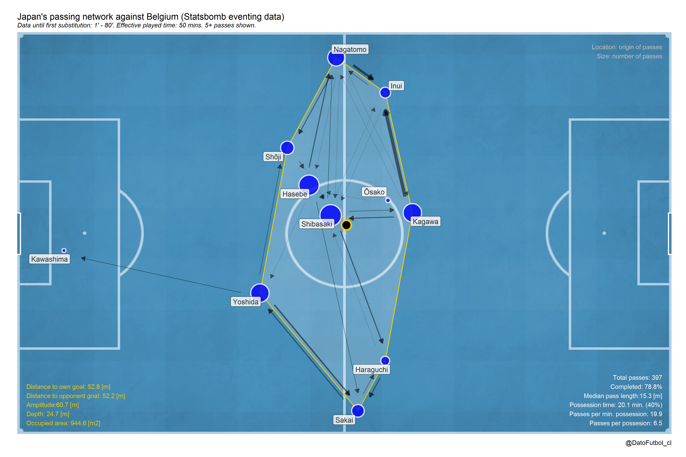
Japan did its first sbstitution at minute 80, 6 minutes after to be tied 2-2 after to be winning (sorpresively) 2-0.
The network reflects a short (depth = 25 meters) and wide team (amplitude = 61 meters), with a general players positions centralized in average. The passes participation of most of its players was homogeneous, being more notorious for Haseb and Shibasaki at the center, Kagawa as the creator midfielder and also Nagatomo and Yoshida in their respective positions. Even though Osako went a little bit to back at mid positions, he didn’t participe too much compared to his partners. In the most common interactions the left interior midfielder Inui participed, as receptor of pases from Kagawa and Nagatomo.
The ball possession until minute 80 was 40% compared to the effective possession time and the pass accuracy was 79%. In both cases the values are lower than Belgium (60% and 84% respectively). The median pass lenght reachs 15 meters (2 meters lower than its opponent), representing a closer interaction.

An another hand, Belgium did its first substitution at minute 64, when it still was 0-2 losing. Until that moent, the passing networks shows a long (depth = 52 meters) and wide team (amplitude = 60 meters). In contrast to Japan, in addition to the high difference in the depth value, its players participation was not homogeneus, in fact it was mainly biased to its defense line of 3 defenders, whose connections also represent the most frequent interactions. Even though Belgium had higher ball possession (60%), an important part of its passes occur across own half.
It would be interesting to see how the networks changed after the 2 substitutions done at minute 64.
Finally, I think that is not possible to get too many more meaningfull insights from this graphs. It would be useful to include some metric to value passes like the mentioned above or to have the tracking data related to add more context analysis. In addition to that, we have to always be careful with the interpretations here specially because this is “just an average picture” of what happened along the considered temporal window.
2.- Tracking data (Metrica Sport)
In the following part a couple of examples using the context variations:
- With this tool we can see the difference between passing networks of a same team when it has the ball possession and when it hasn’t it [Game 1, Home Team]
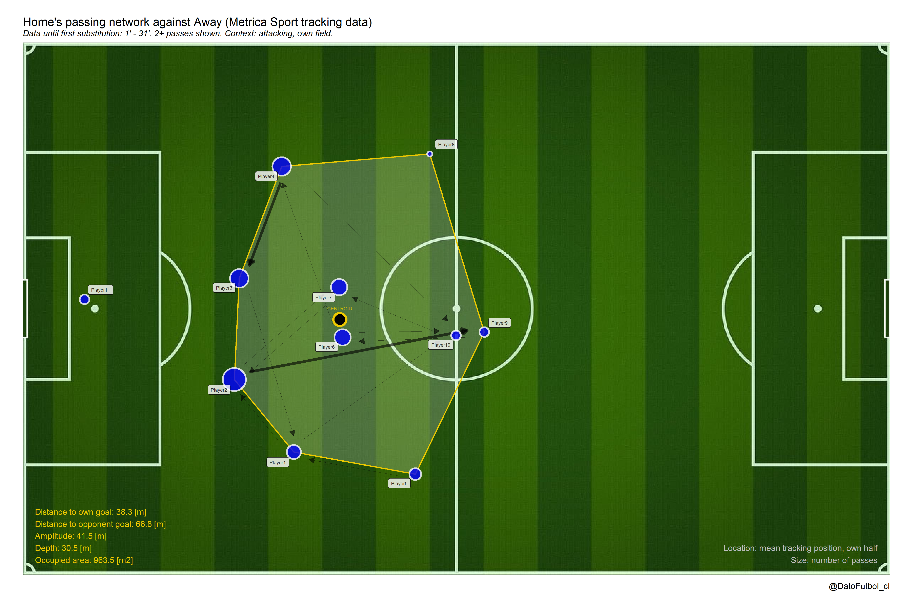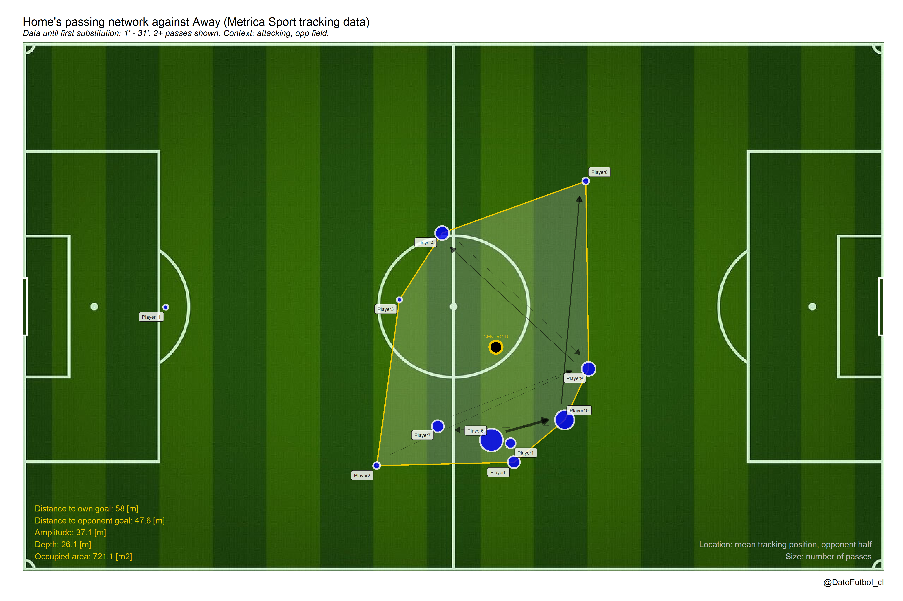
- In addition to above, even paradoxly not considering the passes, we can to observe the mean positions along defensive states (off ball possessions) across the own half and the opponent half [Game 1, Away Team, right to left play direction.
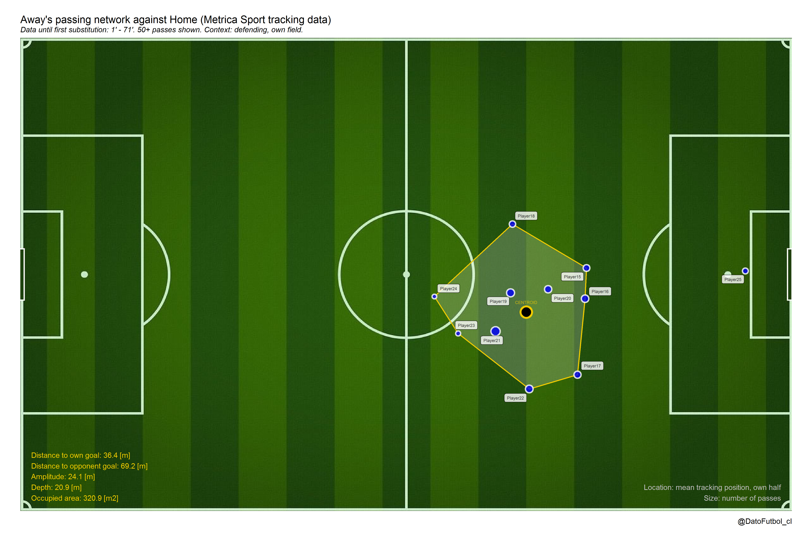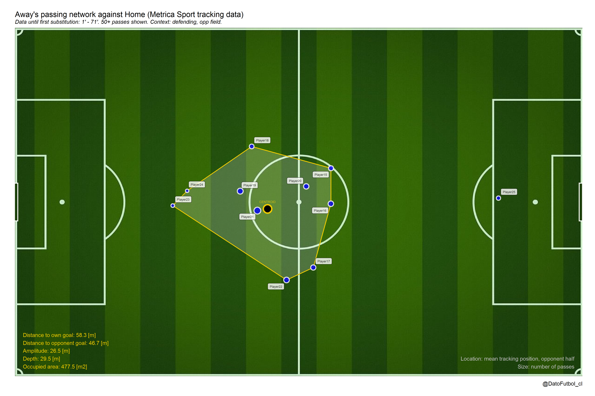
3.- Using both event data or tracking data, another application is to increase the temporal window in order to include a lot of games (e.g. a whole league season). This way the passing networks can show general long time position and/or interaction patterns, allowing teams comparison.
Here a recent example of the season 2019-2020 of Premier League (click here to see the source):
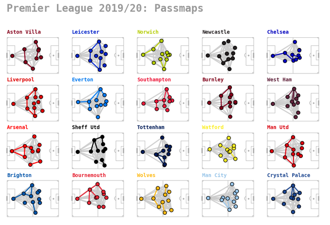
Here a study focused on to get the representative passing networks for the mythical Guardiola’s Barcelona (click here to see the source):
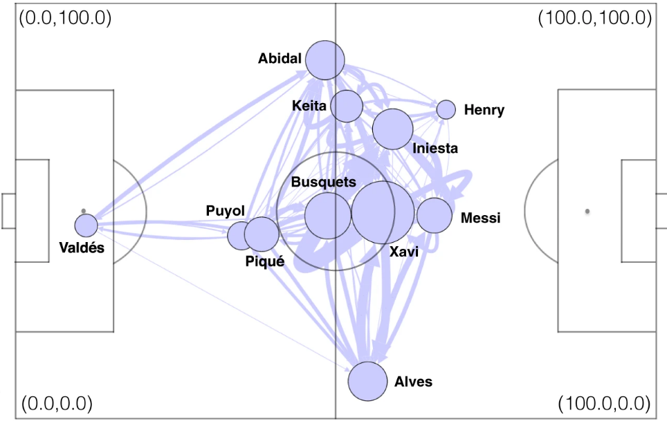
If you have any question or feedback please feel free to reach me by Twitter @DatoFutbol_cl or to my email account: ismaelgomezs@gmail.com.